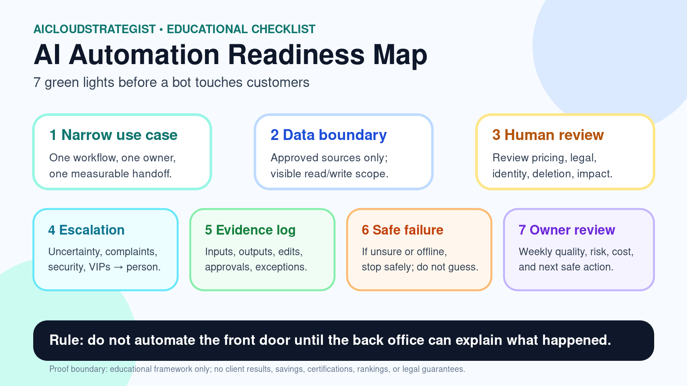

AICloudStrategist daily knowledge post • Automation readiness
AI Automation Readiness Map: 7 Green Lights Before a Bot Touches Customers
Most automation failures start before the model runs. The risky part is usually unclear ownership, unclear data boundaries, or a missing human checkpoint.

Checklist
1. Use case is narrow
One workflow, one owner, one measurable handoff.
One workflow, one owner, one measurable handoff.
2. Data boundary is visible
The bot can only read/write approved sources.
The bot can only read/write approved sources.
3. Human review is defined
Pricing, legal, identity, deletion, and customer-impact actions require approval.
Pricing, legal, identity, deletion, and customer-impact actions require approval.
4. Escalation path exists
Uncertainty, complaints, security issues, and VIP accounts route to a person.
Uncertainty, complaints, security issues, and VIP accounts route to a person.
5. Evidence is logged
Inputs, outputs, edits, approvals, and exceptions are reviewable.
Inputs, outputs, edits, approvals, and exceptions are reviewable.
6. Failure mode is safe
If the bot is unsure, offline, or rate-limited, it does not guess.
If the bot is unsure, offline, or rate-limited, it does not guess.
7. Weekly owner review happens
The owner checks quality, risk, cost, and next safe action.
The owner checks quality, risk, cost, and next safe action.
Simple rule: do not automate the front door until the back office can explain what happened.
Proof boundary: Educational framework only. No client result, certification, legal/compliance guarantee, ranking, partnership, or savings claim is made here.
Turn the map into an operational diagnostic
If your team is considering customer-facing AI automation, AICS can map the ownership, data-boundary, escalation and dashboard gaps before rollout.
Request a free automation readiness review · More AICS resources